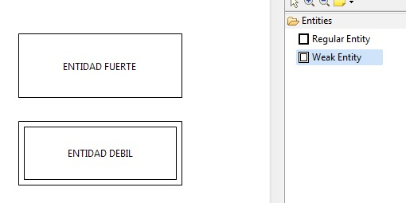

En los diagramas de entidad relación disponemos de dos tipos de entidades que podemos representar que son:
Para crear una nueva entidad sobre nuestro editor tendremos que realizar los siquientes pasos que se muestran a continuación:
Nos vamos al menu Palette situado en el lado derecho del editor y desplegamos la pestaña Entities tal y como aparece en la imagen
Seleccionamos un tipo de entidad:
Sobre el editor (parte en blanco) dibujamos las entidades que deseemos representar y les damos nombre. Nos quedará algo similar a las siguiente:
